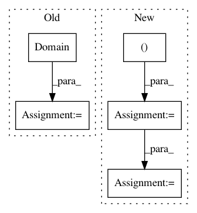

893b7c85c0cb072dfb59cbc1cca81a4a923d9df8,Orange/tests/test_softmax_regression.py,SoftmaxRegressionTest,test_SoftmaxRegressionPreprocessors,#SoftmaxRegressionTest#,17
Before Change
np.random.seed(40)
table = Table("iris")
new_attrs = (ContinuousVariable("c0"),) + table.domain.attributes
new_domain = Domain(new_attrs,
table.domain.class_vars,
table.domain.metas)
new_table = np.hstack((
100 * np.random.random((table.X.shape[0], 1)),
table))
table = table.from_numpy(new_domain, new_table)
learners = [SoftmaxRegressionLearner(preprocessors=[]),
SoftmaxRegressionLearner()]
results = CrossValidation(table, learners, k=10)
ca = CA(results)
After Change
def test_SoftmaxRegressionPreprocessors(self):
table = Table("iris")
table.X[:,2] = table.X[:,2] * 0.001
table.X[:,3] = table.X[:,3] * 0.001
learners = [SoftmaxRegressionLearner(preprocessors=[]),
SoftmaxRegressionLearner()]
results = CrossValidation(table, learners, k=10)
ca = CA(results)
In pattern: SUPERPATTERN
Frequency: 3
Non-data size: 5
Instances
Project Name: biolab/orange3
Commit Name: 893b7c85c0cb072dfb59cbc1cca81a4a923d9df8
Time: 2015-12-18
Author: tomaz.hocevar@fri.uni-lj.si
File Name: Orange/tests/test_softmax_regression.py
Class Name: SoftmaxRegressionTest
Method Name: test_SoftmaxRegressionPreprocessors
Project Name: biolab/orange3
Commit Name: a37921eef9c5c67fc43c6c81d42616bda10b3cde
Time: 2016-04-22
Author: andrej.jugovic7@gmail.com
File Name: Orange/tests/test_domain.py
Class Name: TestDomainInit
Method Name: test_domain_conversion_is_fast_enough
Project Name: biolab/orange3
Commit Name: 6b3c00cf4628865d1fb1698c97f2a1e54fcf9316
Time: 2017-03-10
Author: janez.demsar@fri.uni-lj.si
File Name: Orange/widgets/data/owmergedata.py
Class Name:
Method Name: join_table_by_indices